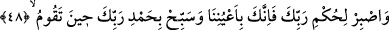

3- Sûre-i mülkü okumak. Zira her gece bunu okuyana fitne ve mihnet zarar vermez.
4- Karındaki bir ağrı sebebiyle ölmek. Bu şekilde ölen kimseye kabrinde azab
olunmaz. Batın/karın hastalığından murad, ishâl ve karındaki gaz hastalığından ölmektir.
5- Kişinin öldüğü vakit, zamandır. Nitekim bir hadis-i şerifte: “Her kim cuma günü
veya gecesi ölürse kabir azabından korunur”[58] buyrulmuştur.
Biz Hak Sübhânehû’dan bizi zellelerden, ayak kaymalarından korumasını, îmanımıza
bozukluk gelmesinden muhâfaza etmesini, kabirde ve kıyâmette emin kılınanlardan
yapmasını niyaz ederiz. Ölüm Nebiy-i Emin (s.a.), enbiya-i mürselîn ve melâike-i
mukarrebînin hatırına rahmet ve kerem-i mübîni ile bizi sevindirmesini temennî ederiz.
48. Rabbinin hükmüne sabret. Çünkü sen gözlerimizin önündesin. Kalktığın
zaman da Rabbini hamd ile tesbih et.
Sen, müşriklerin kendilerine tanınan güne kadar mühlet verilmesine ve seni onlar
arasında hüzün ve sıkıntı içerisinde bırakmasındaki “Rabbinin hükmüne sabret.”
Onların kurdukları tuzaklar sebebiyle kendini sıkıntı içine koyma.
Fakir (Bursevî) diyorum ki Allah bu âyette Rasûlü’ne, hükmüne karşı sabretmesini
emretmiştir; yoksa kâfirlerin ezâlarına sabretmeyi değil. Çünkü bunda Peygamber
(s.a.)’e kolaylık vermeye matuf bir hikmet vardır. Zira Allah’ın hükmüne sabırda,
kâfirlerin ezâ ve cefâsına sabırdan daha büyük bir halâvet ve lezzet vardır. Gerçi
Allah’ın hükmüne sabretmek de diğeriyle aynı anlamı taşdığından sen yine de sabret.
“Çünkü sen gözlerimizin önündesin.” Korumamız ve himayemizdesin. Bu nedenle
devamlı olarak seni gözetlemekte ve muhâfaza etmekteyiz.
Rasûlullah (s.a.)’i korumada fevkalade bir itinâ ve bunun pek çok yolu bulunmaktadır.
Habib (s.a.) ile Kelim (a.s.) arasındaki üstünlük farkı izhar olunmaktadır. Zira Allah
başka bir âyette Kelîm olan Hz. Musa hakkında, “Gözümün önünde yetiştirilmen
için” (Tâhâ 20/39) buyurarak “ayn” ve mütekellim zamirini müfred getirmiştir.
et-Te’vîlâtü’n-Necmiyye’de bu âyet şu mânâ ile tefsir olunmaktadır: Seninle ilgili
olarak ezelde herhangi bir hükmümüz yoktur. Zira sen sabretsen de sabretmesen de ezelî
hükmümüz
değişmez.
Lâkin
benim
takdirime
sabredersen,
sabredenlerin
mükâfâtlandırıldıkları hesapsız mükâfâtla sana karşılık veririm. Çünkü sen gözlerimizin
önündesin, ezelî hükümlerimize sabrına karşılık sana yardım ederiz. Nitekim bu hususta
Allah: “Sabret, sabrın ancak Allah iledir” (en-Nahl 16/127) buyurmaktadır.
Baklî’nin Arâisu’l-Beyân’ında âyet-i kerîmedeki “rabbike” kelimesinde bulunan
“Rabb”ın gâib sîgasıyla getirilmesinin nedeni şöyle açıklanmıştır: Rasûlullah (s.a.),
müşriklere karşı konumu itibariyle ubûdiyet ve risâlet ayrımında zorlu bir seçimle
başbaşa kalmış ve bu nedenle Allah ona sabrı emretmiştir. İçinde bulunduğu hâl ona